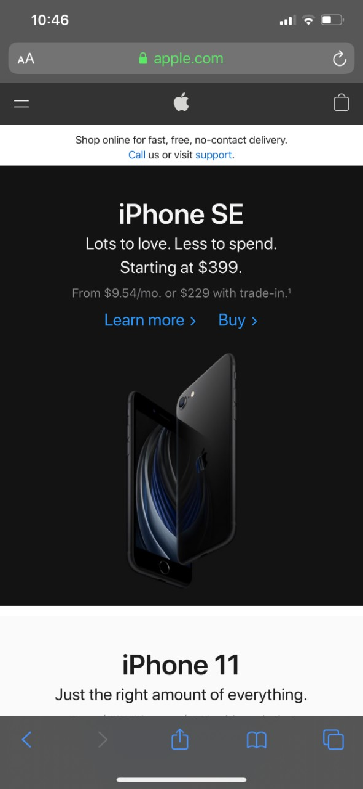
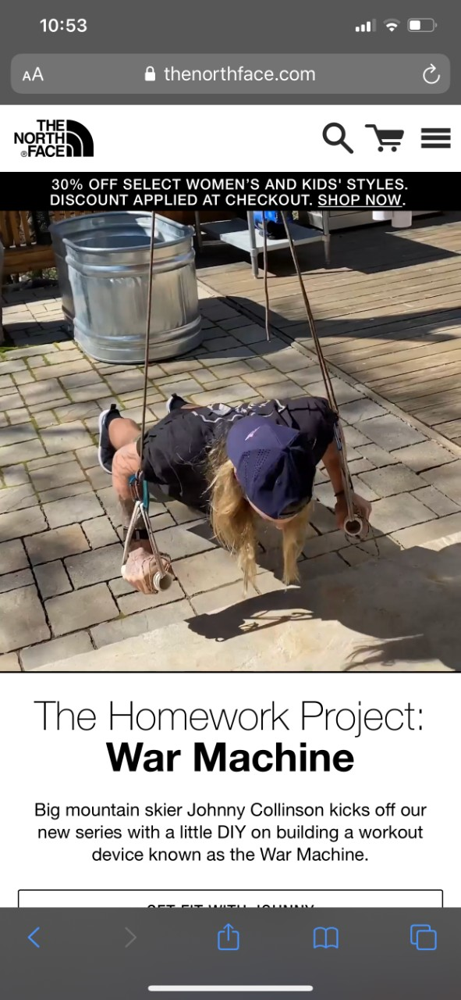
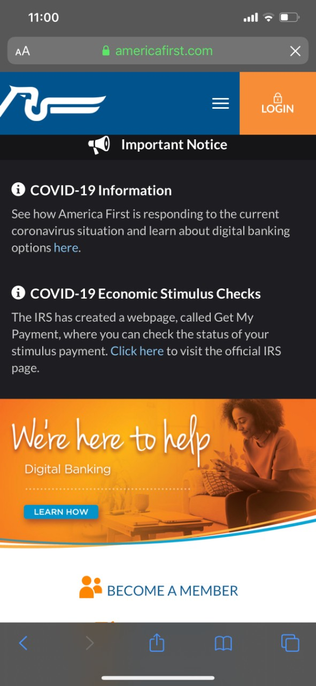

White Space
 AppleApple demonstrates a good use of white space on both their mobile and desktop site. White space doesn't always have to be "white" - it is just a term used to utilize blank space on a page and shift your attention to the main focus. This image has a mostly black/dark background, with only a small amount of information - their latest phones name, an image, the cost, and two links to either get more information or purchase it. It is very direct/to-the-point and leaves little to no room for distraction or confusion.
Alignment
 The North FaceThe North Face follows a consistent center alignment on their mobile site, and a strong left alignment on their desktop version. On the mobile version, there is an image/video in the center of the page that fills the screen from left to right. While all of the text follows the same center alignment whether it’s the small bit of discount information at the top of the image, or the larger text below the image talking about a current project The North Face is working on. While the desktop version uses the same image/video, this version is left aligned. The North Face logo itself is lined up with the text that is displayed as an image overlay.
Contrast
 America First Credit UnionAmerica First Credit Union uses a good rule of contrast with their site with the colors they have chosen. They use a warm orange/yellow to display an image, and a cool contrasting blue for their button to obtain more information. They also use a dark and bold solid black background right next to that warm orange, with a white text to display an important bit of information about their current status with the virus. It is bold and contrasts well.